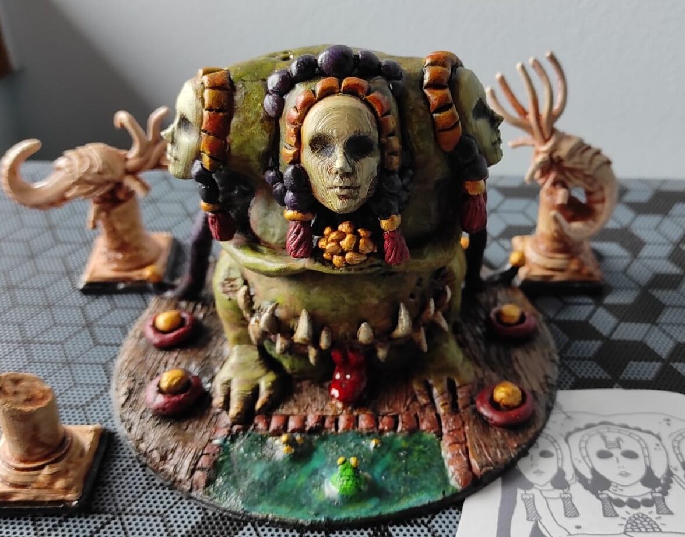

(if the page breaks, click HERE)
⏪ go back
⛄Sculpt your first miniature!⛄
...or die trying...
Sculpting a mini is "a bit harder" than kitbashing one, but you will be able to create almost anything you want!
what you'll need:
- Polymer clay or other sculpting materials [better if soft (easier to use but less precise) ]
- Aluminium foil to not waste all your polymer clay on your first thingo
- Armature wire
- A pointy stick or smt solid to sculpt with
- (Optional but suggested) silicone sculpting tools
- An oven
- Water
- Baking paper or whatever it's called so the clay doesnt stick on your table
- (Optional) isopropyl alcohol and a brush
- (Optional) epoxy resin (milliput, green stuff...)
- (Optional) exacto knife (as a sculpting tool) and nippers
Step 1): plan stuff
Heavily inspired by spirited away, this design was too chaotic and complicated...
This ain't kitbashing! Planning your mini before sculpting it is very important! Even if you can't draw, i recommended sketching the front and one side of your miniature, so you'll be able to reference them later!
> BuT EmA, i'm not creative enough to create a monster out of thin air!
DW! You can be inspired by other artists, or websites like Printerest, just don't copy-paste someone else's stuff!
Step 2): armor up!
I cheated for the monster's face, remember to add bits only AFTER you bake everything!
Attach the steel wire on something, bend it to form a sort of stickman, then bulk it up with some aluminium foil...
It's sculpting time! Start with rough shapes and silhouettes, then add more details when you feel ready. Remember that you can bake your sculpture multiple times!
☝🤓 Don't be afraid to create "save points", if you mess up and add too much clay you'll be able to cut and sand it once it's baked!
☝🤓 Before cooking, smooth the sculpture with isopropyl alcohol (don't soak the mini in it), it helps melting the fingerprints!
☝🤓 For the mega-small stuff, you can use epoxy resin after everything else is done!
Step 3): draw the rest of the fucking howl!

Wow those guides SUCK
After cooking your mini, you can kitbash and sculpt on top of it!
In this image you can see that i added the earrings, teeth and decorations later, because it was too hard to sculpt them with fimo.
Anyways, hope you enjoyed it! Try it and have fun!
(If you are more of a visual learner, i suggest watching "Miscast" on yt, especially the videos where he sculpts his Daemon prince and plague toad)
⏪ go back